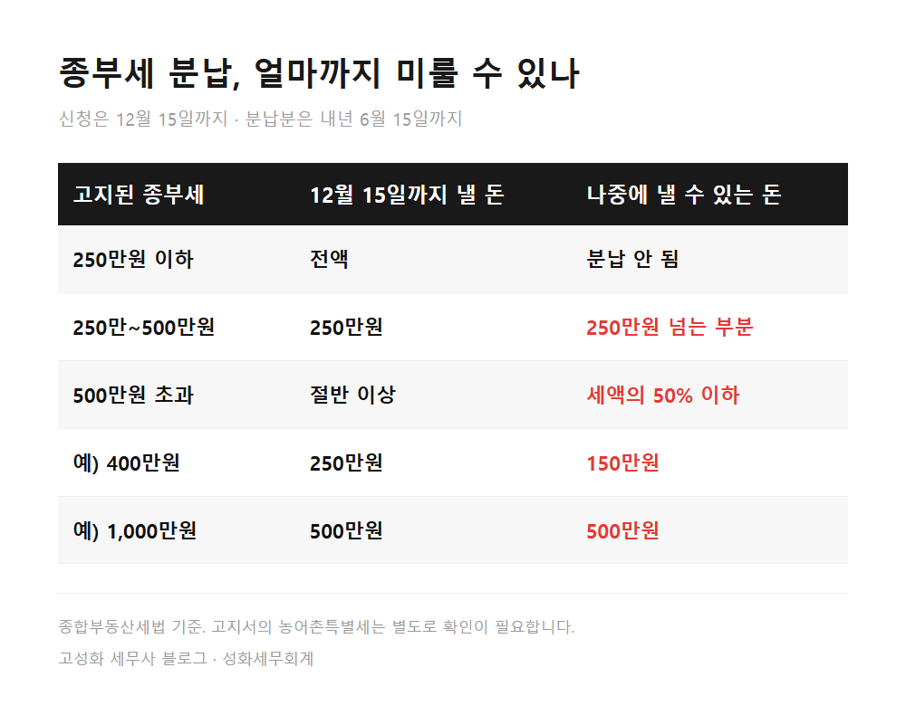

← 세무칼럼 목록
부동산·상속·증여
종부세 분납 신청, 250만원 넘으면 12월 15일까지
250만원. 올해 고지된 종합부동산세가 이 금액을 넘으면, 한 번에 다 내지 않고 일부를 내년 6월 15일까지 미룰 수 있습니다. 조건은 하나입니다. 12월 15일 납부기한 안에 종부세 분납 신청을 해야 합니다.
이 글에서 다루는 내용
- 종부세 분납, 언제 무엇을 하면 되나
- 12월 15일을 넘기면 분납은 안 됩니다
한눈에 보기

본문 전체와 근거 조문은 블로그에서 확인하실 수 있습니다.